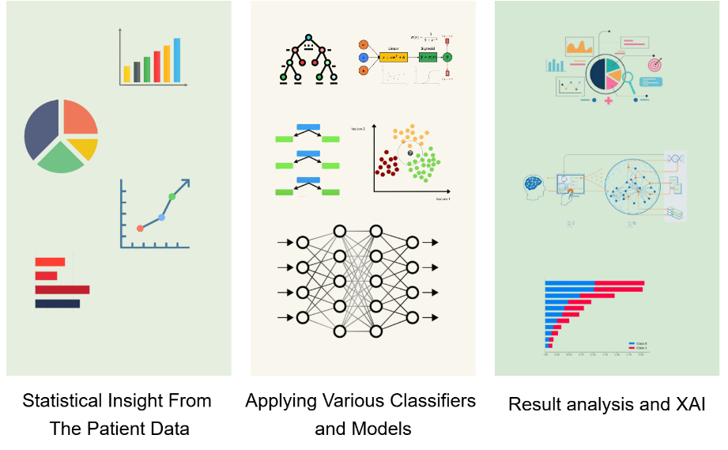
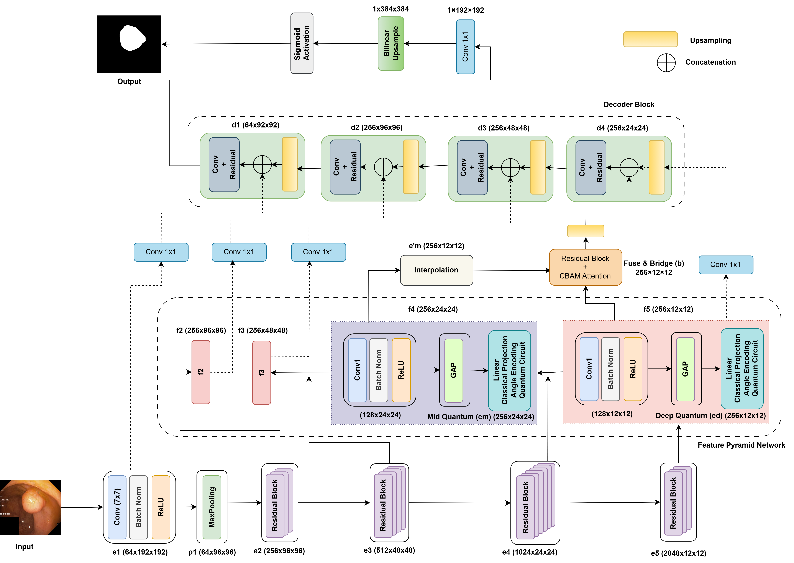
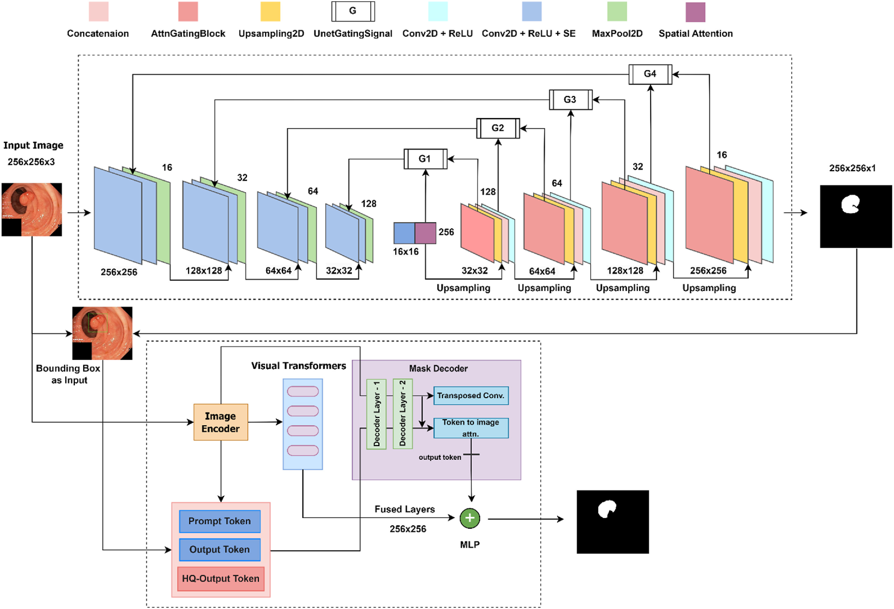
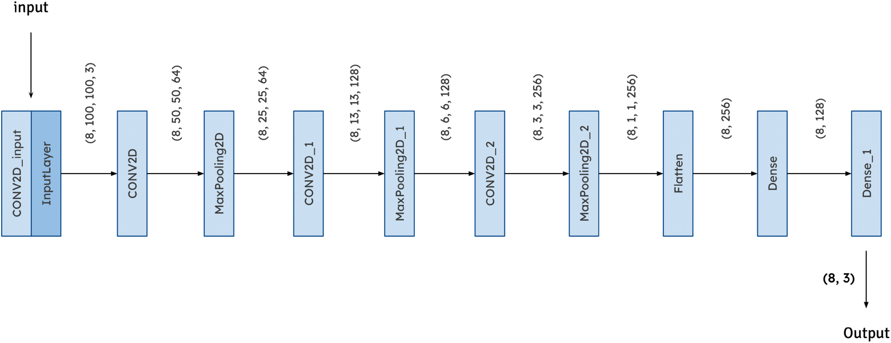
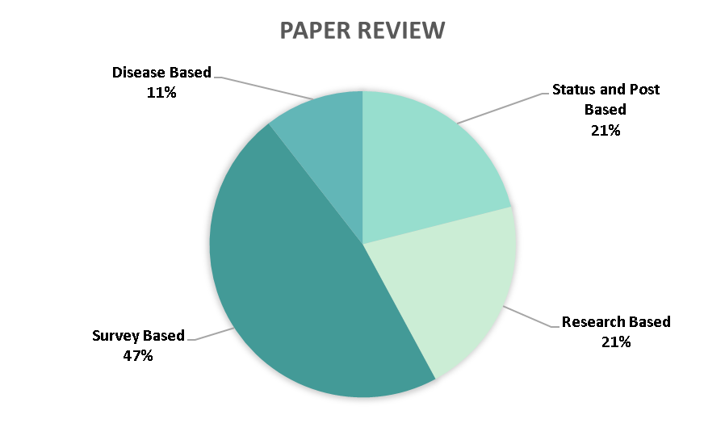
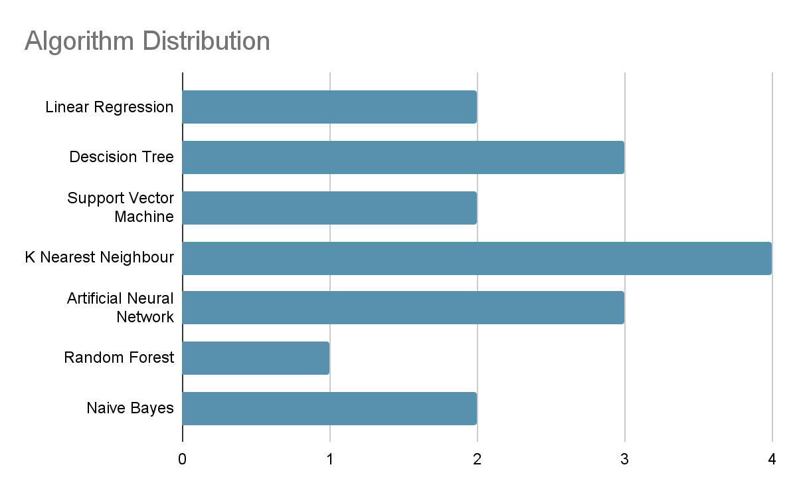

About Me

Hi there! I'm Rashik Shahriar Akash and I'm
.
I am a PhD student in Computer Science at Kennesaw State University. My research focuses on developing better trustworthy models for medical image analysis, with publications in Q1 and Q2 journals including SAMU-Net for polyp segmentation and CerviXpert for cervical cancer screening. As a Gold Medalist from Daffodil International University, I specialize in applying computer vision and AI to solve critical healthcare challenges. My work spans diabetic retinopathy detection with low resulation image, early disease screening systems, and clinical decision support tools.
Research Areas: Deep Learning, Computer Vision, Natural Language Processing, Computational Biology, AI for Social Good
Research Topics: Healthcare AI, Medical Image Analysis, Early Disease Detection, Genomic Data Analysis, AI-Driven Social Network Analysis
Education
-
PhD Student
PhD in Computer Science
Kennesaw State University
Expected 2029
Research Focus: Medical AI, Computer Vision, Deep Learning
-
GRADUATED
Bachelor of Science in Computer Science & Engineering
Daffodil International University
May 2020 - June 2024
CGPA: 3.93/4.00 | Gold Medalist of 12th Convocation
Research
-
Journal November, 2025 Journal of Tropical Medicine [Q2]
Dengue fever presents a growing public health challenge in tropical and subtropical regions, where early detection is crucial for effective intervention...
 -
Conference October, 2025 ICCVW 2025
Early detection and precise segmentation of polyps in colonoscopy images are crucial for the timely diagnosis and treatment of colorectal cancer. In this work...
 -
Journal December, 2024 ARRAY [Q1]
Early detection of colorectal cancer through the proper segmentation of polyps in the colonoscopy images is crucial. Polyps' complex morphology and varied appearances ...
 -
Journal November, 2024 Digital Health [Q2]
Cervical cancer, a leading cause of cancer-related deaths among women globally, has a significantly higher survival rate when diagnosed early...
 -
Conference December, 2023 ICO 2023
There are numerous effects of social media use on people's daily lives. Every day we are connected a lot of time with social media...
 -
Conference December, 2023 ICO 2023
In the modern economic era, households have become one of the most significant corporate entities, and personal finances are essential management-related topics...

Projects
-
MRI Image Analysis for Brain Tumor Detection and Classification using Deep Learning [Project Link]
Implemented deep learning models to classify brain MRI scans into four tumor categories, achieving an accuracy of 88.63% with InceptionV3. -
Accurate Breast Cancer Prediction using Machine Learning [Project Link]
Implemented machine learning algorithms to predict breast cancer diagnosis based on cell nucleus characteristics, with Logistic Regression and XGBoost achieving competitive accuracy. -
DNA Kingdom Prediction and Taxonomic Analysis Using PySpark [Project Link]
Analyzed DNA codon usage patterns to classify sequences into taxonomic kingdoms and explored evolutionary trends using PySpark for large-scale data processing. Also employed machine learning models and achieved high scalability with PySpark. -
DIU Transport Management System [Project Link]
A Django based system that will automate all the record keeping activities such as buses management, route management and passenger management (Booking and Payments).
Work Experience
Research Assistant, Health Informatics Research Lab (July 2024 to Present)
Research Assistant, Apurba-DIU Research and Development Lab (April 2023 to June 2024) [Experience Letter]
Trainer, Advanced Machine Learning and Deep Learning BootCamp by DIU NLP & ML Research Lab (May 2023 to December 2023) [Experience Letter]
TRAINER, ITEE Batch April 2024
Lab Prefect, Worked as a Lab Prefect in the Algorithm Lab at Daffodil International University (May 2022 to Dec 2022)
-
Collaborating in Computer Vision Projects, Especially in the area of Medical Imaging.
-
The task is to Produce High-quality Q1 Journals.
Research Assistant, Apurba-DIU Research and Development Lab (April 2023 to June 2024) [Experience Letter]
-
Work experience on 3 Government Funded Projects
-
Working with the character and word-level OCR data annotation team.
-
Working with the OCR data segmentation team.
-
Working with the Font Interoperability Engine tester team.
-
Working with the Screen Reader Alo tester team.
-
Additional contributions to ADRL’s research efforts, including:
-
Conducting literature reviews on relevant computer vision topics.
-
Collaborating on research projects and assisting in the development of custom algorithms.
-
Engaging in algorithm implementation and optimization.
Trainer, Advanced Machine Learning and Deep Learning BootCamp by DIU NLP & ML Research Lab (May 2023 to December 2023) [Experience Letter]
-
Developed and delivered a comprehensive curriculum for the BootCamp.
-
Conducted lectures, workshops, and practical sessions to teach participants.
-
Guided participants through hands-on coding exercises using popular frameworks (e.g., TensorFlow, PyTorch).
-
Provided individual and group mentoring, addressing participants' questions and clarifying doubts.
-
Supervised capstone projects and provided feedback on participants' progress and implementation.
TRAINER, ITEE Batch April 2024
-
Conducted classes designed to help students prepare for the IT exam.
-
Developed and delivered instructional materials and practice tests.
Lab Prefect, Worked as a Lab Prefect in the Algorithm Lab at Daffodil International University (May 2022 to Dec 2022)
-
Assisted in teaching Algorithm Lab classes.
-
Created functional and technical application documents.
News
-
Nov 2025 Published 1 article in Q2 journal
-
Oct 2025 Published 1 article titled "QpolypNet" in ICCVW
-
Aug 2025 Started PhD in Computer Science
-
Feb 2025 Received Gold Medal for best academic excellence in BSc in Computer Science
-
Dec 2024 Published 2 articles in Q1 and Q2 journal
-
Jul 2024 Joined as RA at Health Informatics Research Lab
-
Apr 2024 TRAINER at ITEE Batch April-DIU
-
Dec 2023 Published first review article x 2
-
Oct 2023 Level 2 (FE) passer of Information Technology Engineers Examination
-
May 2023 Elected as Vice President of DIU Computer and Programming Club
-
May 2023 Trainer, Advanced Machine Learning and Deep Learning BootCamp
-
Apr 2023 Appointed as an RA at Apurba-DIU Research and Development Lab
-
May 2022 Joined as a Lab Prefect at Algorithm Lab at DIU
-
Dec 2013 Government scholarship in Junior School Certificate Examination
-
Dec 2011 Government scholarship for High School Entrance
Services
-
Peer Reviewer for Pattern Recognition
-
Peer Reviewer for Engineering Applications of Artificial Intelligence
-
Peer Reviewer for Computational Biology and Chemistry
-
Peer Reviewer for Systems and Soft Computing